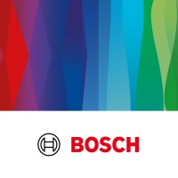
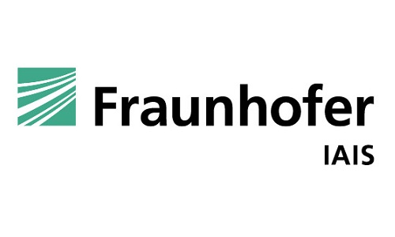

About Me
I'm an AI Research Engineer and Software Developer holding Master's with specialisation in Deep Learning & Generative Models from Otto von Guericke University, Magdeburg. With over 4+ years of industry experience, I have worked on projects spanning computer vision, NLP, and full-stack web development.
I'm passionate about pushing the boundaries of AI - from fine-tuning large vision-language models to building scalable web applications. I thrive where research rigour meets practical engineering.
Experience

AI Research Intern Full-time
Bosch Center for Artificial Intelligence (BCAI), Germany
Jan 2025 – Present- Researched and developed SOTA Deep Learning models for scene understanding using RT-DETR and YOLOP to deconstruct raw video data into semantic JSON representations, capturing object trajectories.
- Implemented perspective transformation algorithms to map 2D pixel-level detections into 3D metric coordinates, ensuring spatially accurate inputs for the downstream generation module.
- Developed an Agentic framework that consumes the JSON data to generate novel, adversarial driving scenarios.
- Leveraged Azure OpenAI GPT-4o model to parametrically augment scenes, applying RAG to ensure generated scenarios adhere to traffic regulations.
- Deployed the entire pipeline as microservices, using FastAPI , and Next.js, containerized via Docker and automated for production using GitHub Actions CI/ CD.
- Researched and developed a novel prompt-tuning framework for Vision-Language foundation models (CLIP) on Anomaly detection domain, achieving SOTA results on public datasets (avg. +4% accuracy) and a 35% performance increase on internal proprietary datasets
- Built a MLOps pipeline using MLFlow logging experiments, hyperparameters and managing model artefacts during ablation studies.
- Deployed the final model using Docker and FastAPI allowing zero-shot inference for real-time visual inspection.
Research Assistant – Full Stack Developer Part-time
Otto Von Guericke University, Germany
Aug 2024 – Dec 2024- Developed a Health-LLM system by fine-tuning BioMistral-7B model on tele-clinic data.
- Implemented end-to-end RAG pipeline to retrieve related patient health reports from vector databases , and engineering few-shot examples to restrict LLM from hallucinating and generate context relevant response.
- Contributed to open-source project involving discrete mathematics proofs and logical reasoning (fitch.js)

Research Assistant – Python Developer Part-time
Fraunhofer IAIS, Germany
Oct 2023 – Apr 2024- Developed REST API endpoints using FastAPI.
- Wrote comprehensive unit and integration tests with Pytest, including fixtures and mocks.
- Refactored legacy code with dependency injection, improving performance and maintainability.
Research Assistant – Full Stack Developer Part-time
Otto Von Guericke University, Germany
Aug 2022 – Sep 2023- Designed and developed a responsive web application from scratch using React and Flask.
- Migrated the codebase to Next.js for improved performance and SEO.
- Integrated Prisma ORM to optimise database operations.

Application Developer Full-time
Tata Consultancy Services, India
Jul 2019 – Mar 2022- Developed web components for Bayer's global website using Drupal, SCSS, and Twig in an Agile team.
- Worked on PHP (Drupal 8) backend solutions for data management and content workflows.
- Implemented client-requested enhancements that improved user experience metrics.
- Mentored junior developers and led resolution of critical bugs.
Skills
AI / ML
Languages
Frameworks
Databases & Cloud
Tools & DevOps
Projects
Unsupervised Image Classification
Grouped images into semantically meaningful clusters without ground truth using the SCAN method. Applied Grad-CAM to highlight important image features.
OMDB Browser
Movie search app with metadata display, caching, and recommendation functionality. Built with Next.js and Tailwind CSS.
Health-LLM: RAG Disease Diagnosis
Personalised health diagnosis using BioMistral-7B and LangChain with RAG techniques, vector databases, and few-shot examples for context-relevant responses.
MLOps Real-Time Object Detection
Real-time image segmentation app with Streamlit and YOLOv8, deployed on AWS SageMaker with a full MLOps pipeline for continuous monitoring.
Interview Automation System
Intelligent QA system using Word Mover's Distance and a Google News word vector model to assess semantic similarity between candidate and expected answers.
Time Series Forecasting – VertexAI
Built and deployed a forecasting model on Google VertexAI. Visualised results and created an interactive dashboard with Google Looker Studio.
Chatbot for E-Commerce
AI chatbot handling common e-commerce queries built using a feed-forward Neural Network with 2 hidden layers, served via a Flask backend.
Education
Master's in Digital Engineering
Otto Von Guericke University, Magdeburg, Germany
CGPA: 1.7 (German Scale)
B.Tech in Computer Science & Engineering
Government Engineering College, Palakkad, India
CGPA: 2.5 (German Scale)
Contact Me
I'm always open to new opportunities, collaborations, or just a friendly chat. Feel free to reach out!